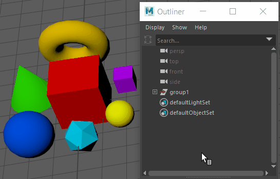

将对象分组时，可以将组作为单一单位选择、移动、旋转和缩放。
按 Ctrl + G 将对象分组到一起
| 目标 | 操作 |
|---|---|
|
将选定对象分组到一起。 |
选择或按 Ctrl + G。 有关详细信息，请参见“分组”(Group)选项。 |
|
对选定组进行解组。 |
选择。有关详细信息，请参见“解组”(Ungroup)选项。 |
|
选择组中的对象。 |
打开大纲视图(Outliner)，展开组节点以显示组内对象，然后单击要选择的对象。 
|
依据场景层级，“分组”(Group)命令对新变换节点下的选定对象进行移动。